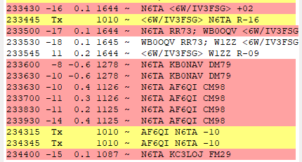

Only EVERY day on FTx mode.
Some are NA but other entities that are no where near rare (a few in particular, oui, hai, da!) call too and it's annoying. I ignore them until I've worked the DX. If they let the calling continue until they time out, fully ignored, never answered ("You are dead to me" hi hi).
Call once, wait a while. Call once, wait a while. That will
tell me you're looking for the state, (county or grid, both
somewhat rare here) without causing issue. THEN I might be
inclined to answer; that's polite; tap on the door, don't kick it
down.
While calling me on a non-standard DX window, nope, ain't a gonna.
Manners. They're important, even in DXing (or especially). Some stations need to learn them or dust them off; then apply them.
It's exactly like continuously calling ON the DX freq/tone in any
mode. Some things are just never proper and only irritate the
rest.
73,
Rick nk7i
DN18 Boundary county, Idaho
Virtually every time I get on and call some DX, I have NA calling me as I try to work a needed entity. I do not understand and usually ignore them since it takes me out of the pileup to answer them. I feel guilty for ignoring them but my DX is more important. If I get back to them later, they often are gone.Anybody else get this treatment?Al

_______________________________________________ Chat mailing list Chat@ncdxc.org http://mail.ncdxc.org/mailman/listinfo/chat_ncdxc.org